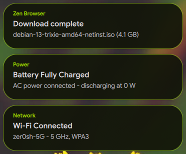
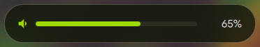
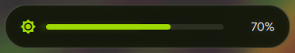

Notifications & OSDs
This guide details the architecture, screen positioning, and animation dynamics for floating notification toasts and on-screen display (OSD) cards (Volume, Brightness, Music, and Mini Player) in Quickshell running on the Hyprland compositor.
Design Parameters and Dynamics
All floating indicators follow a standardized behavioral contract:
- Screen Placement: Top of the screen, horizontally centered (
anchors.top: true,anchors.horizontalCenter: parent.horizontalCenter). - Top Margin:
topMargin: 46 px(reserves a comfortable visual gap beneath Waybar's 36 px height). - Theming: Colors, translucency, and borders are rendered using Matugen Dynamic Palette Tokens (
surface_container,outline,on_surface). - Entrance Animation (Downward Slide):
- Translates from
_slideY: -28to0over 260–280 ms usingEasing.OutCubicacceleration. - Fades in opacity from
0to1over 220 ms usingEasing.OutQuad. - Queue Dynamics: When a new notification arrives, it occupies the top slot and fluidly pushes older active notifications downward using
move: Transition. - Dismissal Animation: Gently moves upward (
to: -20) and fades out (opacity: 0) before unmounting from the model. - LayerShell Surface Lifecycle & Input Masking:
- Dynamic Loader Lifecycle: The
PanelWindowis instantiated via aLoader { active: toastModel.count > 0 }. When no toasts are active, the surface is completely unmapped from the Wayland compositor, eliminating stale layer surfaces. - Targeted Surface Dimensions: Instead of spanning full-screen width, the window specifies
implicitWidth: 380and dynamic height (Math.min(600, toastModel.count * 140 + 60)), anchored only atanchors.top: trueso the compositor centers it horizontally. - Layer
Top: Placed onWlrLayer.Top(rather thanOverlay), preventing pointer grabs and focus disruption on normal desktop windows. - Input Masking: Uses
mask: Region { item: toastCol }to restrict mouse interaction strictly to active notification cards. All transparent areas pass clicks through to underlying windows.
Visual Reference
Top-center notification toasts, each rendering the originating application, title, and body:

Volume and brightness OSD cards sharing the same placement, geometry, and surface tokens:


Source Files Map
| Component | Source File | Responsibility |
|---|---|---|
| Notification Service | modules/notifications/NotificationService.qml |
DBus server claiming org.freedesktop.Notifications, history store, and Waybar count signal sync. |
| Toast Window | modules/notifications/NotificationToastLayer.qml |
Top floating window, model prepending (insert(0)), and column move transition. |
| Notification Toast Card | modules/notifications/NotificationPopup.qml |
Floating card styling, slide-down appearance, and dismissal animations. |
| Collapsible Notification Card | modules/controlcenter/ControlCenter.qml |
Embedded collapsible drawer with Notifications • ( # ) title, 180° rotating toggle chevron, Clear all button, and scrollable card feed. |
| Notification Feed Item | modules/notifications/NotificationItem.qml |
Individual notification item styling in the Control Center drawer. |
| Volume OSD | modules/osd/VolumeOsd.qml |
Listens to PipeWire sink changes and animates top-center card. |
| Brightness OSD | modules/osd/BrightnessOsd.qml |
Listens to brightnessctl and animates top-center card. |
| Music Track Toast | modules/osd/MusicOsd.qml |
Automatic top-center popup on MPRIS track transition. |
| Mini Music Player | modules/osd/MiniPlayer.qml |
Interactive player triggered via SUPER + M (see Keybindings Catalog). |
Making Future Adjustments
Adjusting Vertical Distance
Edit topMargin in the container Item or toastCol:
Changing Animation Speed
Inside the appearAnim block:
NumberAnimation {
target: osdCard; property: "_slideY"
from: -28; to: 0; duration: 260; easing.type: Easing.OutCubic
}
Live Testing
- Trigger notification:
- Trigger volume OSD:
- Battery states: this configuration exposes no battery OSD or IPC test
hook, so warning and critical cards cannot be faked from the shell
(
qs ipc call battery ...returnsTarget not found). Battery warnings are rendered by Waybar'sbatterymodule, which switches to itswarning,criticalandchargingstates from live system data (seewaybar/config.jsonc).
Related Documentation
- Waybar Status Bar: Top status bar geometry and vertical alignment with floating toasts.
- Quickshell Overview: Main widget architecture, Control Center, and component index.
- Hyprland Keybindings: Audio, brightness, and utility shortcut bindings.
- Hyprland Architecture: Autostart order and compositor lifecycle hooks.
- Matugen Theming Engine: Dynamic surface and accent token definitions.
- Screen Shaders: Visual filters toggled from the notification drawer and control center.